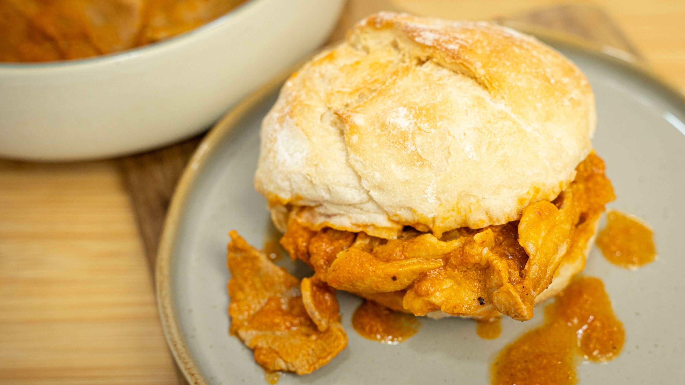

Go back to the main page
Bifana

Photograph taken by Alexandre Jesus over on pexels
The bifana is a sandwich that originated in the city Vendas Novas around the 1960's, from the Évora district, which consists of a tradicional portuguese style of bread named papo seco, or portguese bread rolls, and think pork steaks. The steaks usually are prepared with a sauce consisting of mustard and/or hot sauce
The bifana is usually served at events, coffee shops and pubs, being a cheap and easy to make sandwich. For this recipe, we will be preparing Porto-style bifana, another portuguese city.
Ingredients
Note: This recipe is for four people
- 600 g pork steaks (bifanas), preferably very thin
- 1 tsp of salt
- 1 tsp of black pepper
- 2 tbsp of olive oil
- 4 cloves of garlic
- 1 medium onion
- 200 ml of tomato passata
- 25 ml of tomato paste
- 50 ml red pepper paste
- 1 tsp ground cumin
- 2 tbsp of Worcestershire sauce
- 1 tsp of hot sauce
- 2 bay leaves
- 330 ml of beer
- 150 ml of white wine
- 6 Portuguese bread rolls( papo seco)
Steps
- Roughly chop the onion and garlic and sauté them in a saucepan with the olive oil until nicely browned.
- Add the tomato paste, red pepper paste, and tomato passata. Cook for about 4 minutes.
- Add the beer, white wine, Worcestershire sauce, and hot sauce. Allow the mixture to simmer and reduce so the flavors intensify.
- Season the pork steaks with the salt and pepper. If the steaks aren't already very thin, place them between sheets of cling film and gently flatten them with a heavy-bottomed saucepan.
- Once the sauce has reduced and developed good flavor, blend it with a hand blender until smooth. Add the ground cumin and bay leaves.
- Add the pork steaks to the sauce and simmer for about 30 minutes, until they are very tender.
- Cut the Portuguese bread rolls (papo seco) in half. Place a pork steak inside each roll and spoon plenty of the sauce over it.